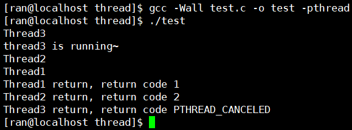

在Linux中，目前线程的实现是用Native POSIX Thread Libary，这种实现下每个用户级线程对应一个内核中的调度实体即内核级线程，拥有自己的进程描述符（task_struct结构体）在CPU的角度，一个PCB（进程描述符）就代表一个进程，Linux下的线程都是轻量级进程，内核并不知道用户级线程的存在，该用户级线程的实现是通过用户级线程库POSIX来完成的，链接这些线程函数库时要加上"-lpthread"选项，指定要链接的库名
创建线程
int pthread_create(pthread_t *thread, const pthread_attr_t *attr, void *(*start_routine) (void *), void *arg);
thread: 输出型参数返回线程ID（用户态线程ID）
attr: 设置线程的属性，attr为NULL表示使用默认属性
start_routine: 是个函数地址，线程启动后要执行的函数
arg: 传给线程启动函数的参数
成功返回0；失败返回错误码
传统的一些函数是，成功返回0，失败返回-1，并且对全局变量errno赋值以指示错误。pthreads函数出错时不会设置全局变量errno（大部分其他POSIX函数会这样做）而是将错误码通过返回值返回pthreads同样也提供了线程内的errno变量，以支持其它使用errno的代码。对于pthreads函数的错误，读取返回值要比读取线程内的errno变量的开销小
pthread_t实际是一个unsigned long类型，其本质就是一个进程地址空间上的一个地址，NPTL提供pthread_t pthread_self(void);函数来查看
创建一个线程就是创建一个pcb，但是线程中还有一些独有的数据，加载动态库就是在进程地址空间中的共享区，而我们用的NPTL函数本身就是动态库函数，所以线程独有的信息都在共享区，操作系统在共享区开辟了一块空间来存放每个线程独有的数据（栈、线程局部存储信息、线程在用户态的描述）而pthread_t就指向这个空间的地址，也可以使用命令pstack [进程id(线程组id)]查看
我们平常使用ps -L 查看到的pid就是线程组id，而LWP就是调度实体的线程id（内核级线程id）也叫轻量级进程id，Linux提供了gettid系统调用来返回其线程id（内核级线程id），可是glibc并没有将该系统调用封装起来，在开放接口来共程序员使用。如果确实需要获得线程ID，可以采用如下方法：#include <sys/syscall.h> pid_t tid; tid = syscall(SYS_gettid);
线程终止
从线程 return，如果是从主线程return，相当于exit，所有线程都结束
线程自己调用pthread_exit来终止自己
void pthread_exit(void *value_ptr);
value_ptr: 输出型参数，该线程退出时的退出码，注意不要指向一个局部变量，因为当线程的调用函数退出时，局部变量也就销毁了
- 一个线程可以调用pthread_cancel终止同一进程中的另一进程
int pthread_cancel(pthread_t thread);
参数传pthread_self()时终止自己，成功返回0，失败返回错误码
进程等待
当一个线程退出时，如果空间没有被释放，新创建的线程也不会利用退出线程的资源，会发生内存泄漏，因此新线程在退出时主线程要通过等待的方式回收退出线程的资源并获取新线程退出时的状态
int pthread_join(pthread_t thread, void **value_ptr);
value_ptr: 由于线程终止时返回一个指针，这个指针一般指向全局变量或者malloc分配的空间，所以进程等待接收参数的时候需要传入一个一级指针的地址来接收参数，成功返回0；失败返回错误码
注意：该函数是以阻塞的方式进行等待的，thread线程以不同的方式终止，得到的线程终止状态也是不同的：
- 线程以return的方式终止，value_ptr指向的空间中保存return返回的值
- 线程以pthread_exit的方式终止，value_ptr指向的空间中保存传给pthread_exit的参数
- 线程被别的线程调用pthread_cancel的方式终止，value_ptr指向的空间中保存常数PTHREAD_CANCELED，
#define PTHREAD_CANCELED (void\*)-1; - 如果不关心新线程的退出状态，直接将value_ptr设置为NULL即可
1 |
|

我们说父子进程的执行顺序不一定，但是我们却很难看到子进程先于父进程执行，这里却很容易可以看到线程执行顺序不一定，这是因为每次创建一个进程的代价比较大，所以父进程就有很大的概率去执行，而线程的创建代价比较小，所以很容易看到执行顺序不一定这个结果，但是线程等待是串行的
线程分离
在默认情况下创建的线程是joinable的，线程退出后，要对其进行pthread_join操作，否则无法回收资源，造成内存泄漏，如果不关心线程的返回值，那么join就是一个负担，这个时候我们可以告诉操作系统线程退出时，由操作系统自动回收资源
int pthread_detach(pthread_t thread);
也可以是线程自己分离：pthread_detach(pthread_self());一个分离的线程异常退出，整个进程也会异常退出，joinable和detached是两个对立的状态，两者不可能同时存在